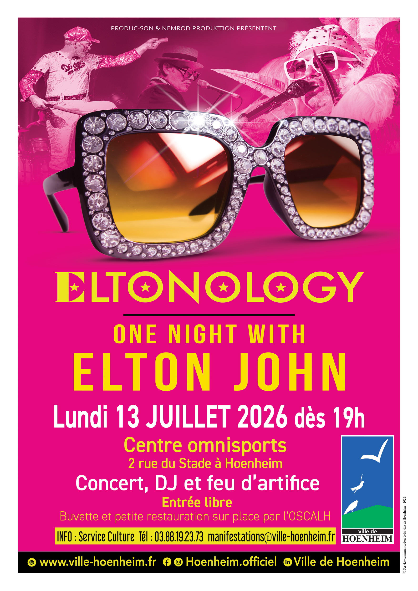

- Cet événement est terminé
Festivités fête Nationale
13 juillet à 19 h 00 min - 23 h 55 min
Navigation de l'événement

Le 13 juillet, veille de la fête nationale, la ville de Hoenheim sera en fête !
A partir de 19h rendez-vous au Centre omnisports, 2 rue du Stade
Au programme : concert ELTONOLOGY, DJ et feu d’artifice
- DJ en début et fin de soirée
- Concert ELTONOLOGY (hommage à Elton John) à partir de 20h30
- Feu d’artifice à 23h
Le 13 juillet, préparez-vous à vivre une soirée inoubliable avec ELTONOLOGY, un spectacle hommage spectaculaire dédié à la légende de la musique Elton John.
Porté par une voix saisissante et des musiciens de grand talent, ce show de deux heures vous plonge dans l’univers flamboyant de l’artiste. Inspiré par l’actualité musicale, entre la tournée d’adieu Farewell Yellow Brick Road et le succès du film Rocketman, ELTONOLOGY propose une immersion totale dans une carrière hors norme.
Le public pourra redécouvrir les plus grands succès qui ont marqué des générations, tels que Your Song, Bennie & the Jets ou encore Rocket Man, mais aussi des titres plus rares issus de l’album Captain Fantastic and the Brown Dirt Cowboy, pour le plus grand plaisir des amateurs comme des curieux.
Costumes emblématiques, piano à queue incontournable, arrangements fidèles aux tournées originales… tout est réuni pour offrir un spectacle bluffant et faire revivre sur scène la magie d’un artiste inoubliable.
Un rendez-vous festif, convivial et ouvert à tous, à ne pas manquer pour célébrer ensemble la veille de la fête nationale !
Porté par une voix saisissante et des musiciens de grand talent, ce show de deux heures vous plonge dans l’univers flamboyant de l’artiste. Inspiré par l’actualité musicale, entre la tournée d’adieu Farewell Yellow Brick Road et le succès du film Rocketman, ELTONOLOGY propose une immersion totale dans une carrière hors norme.
Le public pourra redécouvrir les plus grands succès qui ont marqué des générations, tels que Your Song, Bennie & the Jets ou encore Rocket Man, mais aussi des titres plus rares issus de l’album Captain Fantastic and the Brown Dirt Cowboy, pour le plus grand plaisir des amateurs comme des curieux.
Costumes emblématiques, piano à queue incontournable, arrangements fidèles aux tournées originales… tout est réuni pour offrir un spectacle bluffant et faire revivre sur scène la magie d’un artiste inoubliable.
Un rendez-vous festif, convivial et ouvert à tous, à ne pas manquer pour célébrer ensemble la veille de la fête nationale !
Entrée libre
Buvette et petite restauration (merguez, saucisses blanches, frites, knacks – tartes flambées normales ou gratinées) sur place par l’OSCALH
Pour profiter aux mieux de la soirée voici quelques informations pratiques si vous venez en voiture :
- la rue du Stade sera fermée de 18h à 3h
- le parking Relais-Tram Hoenheim gare, route de la Wantzenau, est à votre disposition